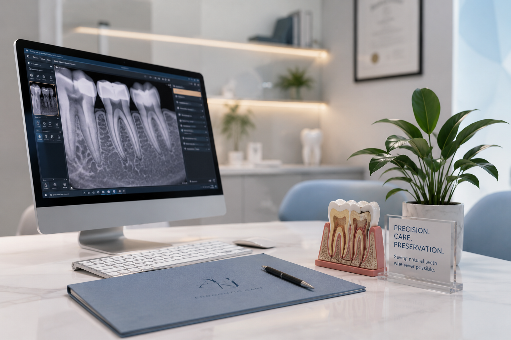

أكثر من 6 سنوات خبرة
خبرة عملية في رعاية الأسنان وتشخيص آلام الأسنان وعلاج الجذور.
عن الطبيب
طبيب أسنان متخصص في علاج الجذور، يعمل في Golden Smile Dental Clinic بالقاهرة، مع خبرة أكثر من 6 سنوات في تشخيص آلام الأسنان والحفاظ على الأسنان الطبيعية قدر الإمكان.

النهج العلاجي
يركز د. أحمد ماهر جودة على فهم سبب الألم أولاً، ثم شرح الحالة وخطوات العلاج بطريقة واضحة تساعد المريض على اتخاذ القرار المناسب بثقة وراحة.
المؤهلات والخبرة
يجمع د. أحمد ماهر جودة بين الخبرة العملية والدراسة المتخصصة في علاج الجذور، مع العمل داخل Golden Smile Dental Clinic بالقاهرة.
خبرة عملية في رعاية الأسنان وتشخيص آلام الأسنان وعلاج الجذور.
يعمل في Golden Smile Dental Clinic بمصر الجديدة، القاهرة.
جامعة الأزهر — غزة، فلسطين.
جامعة عين شمس — القاهرة، مصر.
أسلوب الرعاية
يعتمد أسلوب العلاج على تقييم الحالة بعناية، شرح الخطة بوضوح، وتقديم تجربة مريحة ومنظمة للمريض.
فهم سبب الألم قبل اختيار الخطة العلاجية.
توضيح الحالة وخطوات العلاج بطريقة سهلة ومريحة.
تقديم رعاية هادئة تساعد المريض على الشعور بالاطمئنان.
التركيز على الحفاظ على السن الطبيعي قدر الإمكان.
ماذا يتوقع المريض؟
من أول استفسار وحتى المتابعة، الهدف هو مساعدة المريض على فهم الحالة وخيارات العلاج بطريقة واضحة ومنظمة.